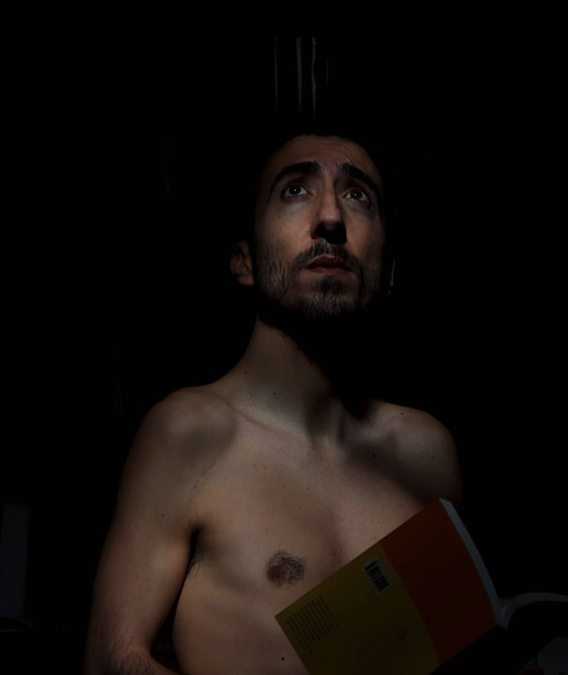

About
Nuno Azevedo is a Portuguese artist based in Porto whose practice moves between figurative and abstract expression. Working across a range of media – including oil pastel, dry pastel, charcoal, and acrylic, on paper, canvas, and other materials such as cardboard – his work explores the relationship between instinct, bodily impulse, imagination, and perception. His abstract works develop through the movements and physical sensations of the body. He is interested in the idea that the body can produce an image before the mind understands it.
The process is often guided by nerves, muscles, gestures, and involuntary spasms, allowing the act of making to begin instinctively rather than from a predetermined idea. As the work develops, imagination may enter the process, interfering with and transforming what began as a purely physical and intuitive act. In his figurative work, he approaches representation through subjective experience. His childlike drawings and paintings emerge from an attempt to work with greater freedom and honesty – to let go of learned ways of representing the world and to move beyond appearances. Distortion and simplification become ways of searching for something more direct and personal: an internal vision of things rather than simply what the eye sees. Across both his abstract and figurative works, he is interested in the space between instinct and conscious thought, between what the body does and what the mind understands, and between the visible world and the inner one.
